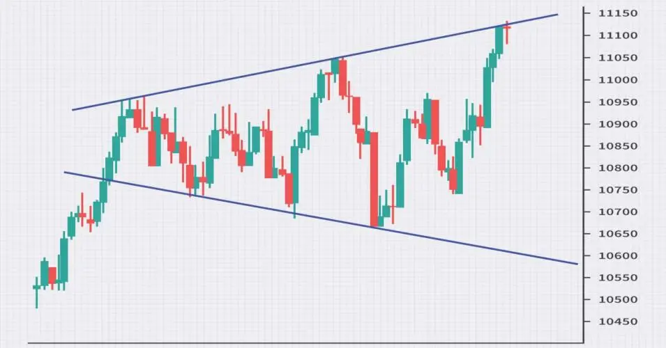

Broadening Triangle पैटर्न एक निष्पक्ष चार्ट पैटर्न है जो एक आपत्रेंड, डाउनट्रेंड या ट्रेंडहीन बाजार में हो सकता है।
इस पैटर्न को एक त्रिभुज या बढ़ी हुई ऊँचाई और बढ़ी हुई निचलाई की तरह दिखा जाता है, जिसके कारण इसे ऐसा नाम दिया गया।
Broadening Triangle पैटर्न एक निष्पक्ष पैटर्न है, इसलिए यह एक आपत्रेंड, डाउनट्रेंड या ट्रेंडहीन बाजार में टूट सकता है।
व्यापारियों ने आम तौर पर इस पैटर्न को एक ट्रेंड परिवर्तन का संकेत दिया था, हालाँकि यह एक भरोसा मानी पैटर्न नहीं है।
त्रिभुज की लंबाई त्रिभुज के नीचे से त्रिभुज की चोटी तक की ऊँचाई की मात्रा होती है।
त्रिभुज की चौड़ाई समय की दूरी होती है जहाँ त्रिभुज बना होता है।
Broadening Triangle पैटर्न एक विश्वसनीय ट्रेडिंग पैटर्न नहीं है, लेकिन यह एक निष्पक्ष पैटर्न है जो एक आपट्रेन्ड, डाउनट्रेन्ड या ट्रेंडहीन बाजार में टूट सकता है।
व्यापारियों ने आम तौर पर इस पैटर्न को एक ट्रेंड परिवर्तन के संकेत के रूप में इस्तेमाल किया है,
हालाँकि उन्हें अन्य बाजार सूचकों के साथ इसे सत्यापित करना होगा।
